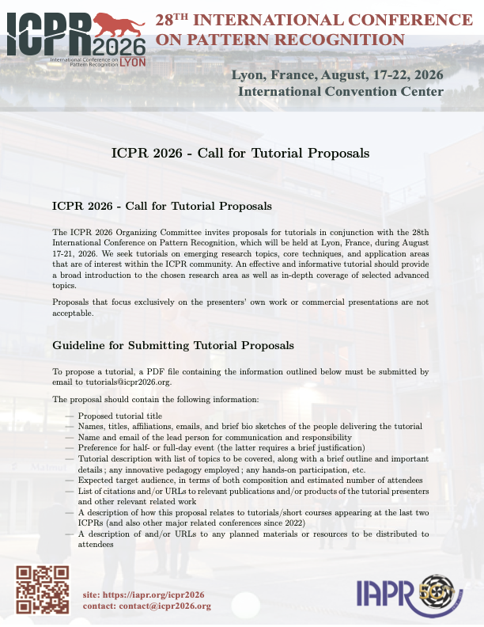

    <div class="row ml-3 mr-1">
      <div class="col-12  text-justify  ">


    <section id="calltutorials">
         <h2>Call for Tutorials</h2>
         <p>
           The ICPR 2026 Organizing Committee invites proposals for tutorials in
           conjunction with the 28th International Conference on Pattern
           Recognition, which will be held at Lyon, France, during August 17-21,
           2026. We seek tutorials on emerging research topics, core techniques,
           and application areas that are of interest within the ICPR
           community. An effective and informative tutorial should provide a
           broad introduction to the chosen research area as well as in-depth
           coverage of selected advanced topics.
         </p>

         <p>  
           Proposals that focus exclusively on the presenters' own work or
           commercial presentations are not acceptable.
         </p>
         <h3>Guideline for Submitting Tutorial Proposals</h3>

         To propose a tutorial, a PDF file containing the information outlined
         below must be submitted by email to tutorials@icpr2026.org.

         The proposal should contain the following information:

<ul>
<li> Proposed tutorial title</li>
<li>   Names, titles, affiliations, emails, and brief bio sketches of the people delivering the tutorial</li>
<li>   Name and email of the lead person for communication and responsibility</li>
<li> Preference for half- or full-day event (the latter requires a brief justification)</li>
<li>   Tutorial description with list of topics to be covered, along with a brief outline and important details; any innovative pedagogy employed; any hands-on participation, etc.</li>
<li>   Expected target audience, in terms of both composition and estimated number of attendees</li>
<li>   List of citations and/or URLs to relevant publications and/or products of the tutorial presenters and other relevant related work</li>
<li>   A description of how this proposal relates to tutorials/short courses appearing at the last two ICPRs (and also other major related conferences since 2022)</li>
<li>   A description of and/or URLs to any planned materials or resources to be distributed to attendees</li>
</ul>

<h3>Proposal assessment</h3>

<p>Each proposal will be evaluated on the basis of its scientific merit,
proposed structure, overall relevance, and how it complements the main
conference.</p>

<h3>Important Dates</h3>
<ul>
<li> Tutorials proposal due: February 28, 2026</li>
<li>   Notification of acceptance: March 31, 2026</li>
<li>   ICPR main conference dates: August 17--20, 2026</li>
<li>   Tutorials/Workshops: August 21--22, 2026</li>
</ul>


<h3>ICPR 2026 will be responsible for: </h3>

<ul>
<li> Providing a meeting venue with necessary technical equipment and catering services during the lunch and/or coffee breaks</li>
<li>   Providing staff to help with the on-site/on-line organization</li>
<li>   Advertising the event on the ICPR web site</li>
<li>   Scheduling the event together with the organizers and including it in the conference program</li>
</ul>


<h3>Tutorial organizers are responsible for: </h3>
<ul>
<li> Compiling and distributing notes to the participants;  leading the event at ICPR2026</li>
</ul>

<h3>Costs and Terms</h3>

         <p>Tutorials are free for all participants with full ICPR2026
           registration. If a person wishes to attend only the tutorials (without the full ICPR2026 registration), then a tutorial-only
           registration will be available. Participation in tutorials is limited
           to the room capacity. ICPR2026 participants who wish to attend a
           tutorial should register for it and will be admitted on a first come,
           first served basis.
         </p>


         <p>
           ICPR 2026 reserves the right to cancel a tutorial if the responsibilities are not fulfilled by
           the proponent, or if too few attendees register for the event, or for any unforeseen reason.
         </p>
         

         <h3>ICPR 2026 Tutorial Co-Chair</h3>
  <div class="col-md-5  ml-3  mr-3 b-3 t-3">
    <div class="card border-info ml-1 mb-3">
        
        <div class="card-body text-info">
            <dl>
                <dd>Xiaoyi Jiang, Germany                </dd>
                <dd>Zhaoxiang Zhang, China                </dd>
                <dd>Luc Brun, France                </dd>
              </dl>
        </div>
    </div>
  </div>
<p>If you have any questions, please contact the
ICPR-2026 Tutorial Co-Chairs at <a href="mailto:tutorials@icpr2026.org"> tutorials@icpr2026.org <a></p>

<h3>Flyers of Call for Tutorials </h3>
         The main flyer of the call for tutorial is available here:
<div class="text-center">
  <a href="files/callForTutorials_icpr2026.pdf">
    <picture class="flyer-container">
      <!-- Version WebP -->
      <source srcset="Images/flyerCallForTutorials.webp" type="image/webp">
      <!-- Fallback PNG -->
      
    </picture>
  </a>
</div>


    </section>


        

</div>

      </div>
    </div>

